Asket ASV
Autonomous
Surface Vessel
Project Overview
Asket is an Autonomous Surface Vessel (ASV) developed by Node Engineering Club, an open‑source engineering community building autonomous robots. The vessel is specifically designed for the Njord 2026 physical autonomous challenge — a competition demanding robust navigation, obstacle avoidance, and autonomous mission execution in real‑world water environments.
The team comprises 13–15 active members from various engineering disciplines, working collaboratively on hardware, software, and mechanical systems. Asket represents the club's commitment to accessible, open‑source autonomy.
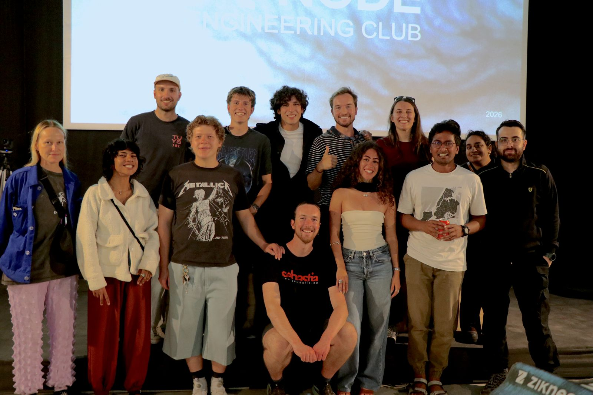
My Role — Head of Exterior Design
As Head of Exterior Design, my responsibility was to evolve the previous year's vessel model into a more capable, refined, and visually compelling platform. The key objectives were:
- Integrate radar systems into the forward section of the hull — creating dedicated housing for sensors without compromising aerodynamics.
- Flatten the deck platform to provide a more stable and accessible surface for mounting electronic components, batteries, and navigation systems.
- Improve interior accessibility for motor and component placement — easier maintenance and faster iteration during testing.
- Enhance aesthetic and visual language — giving the vessel a sharper, more aggressive silhouette that reflects its performance‑oriented purpose.
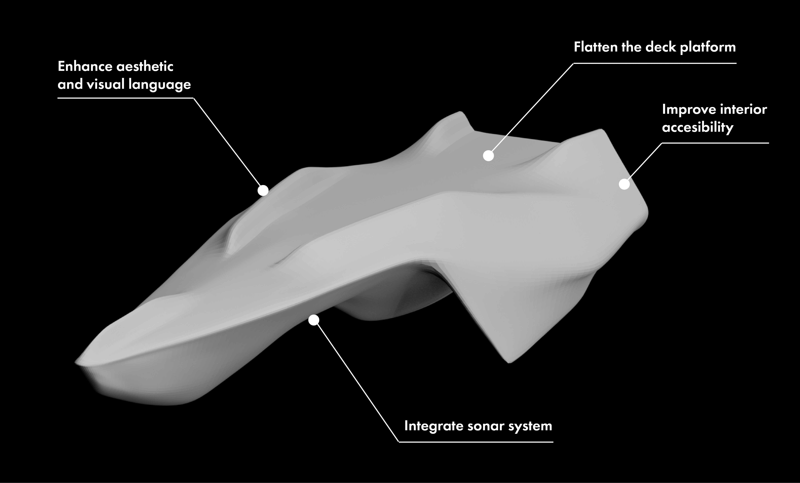
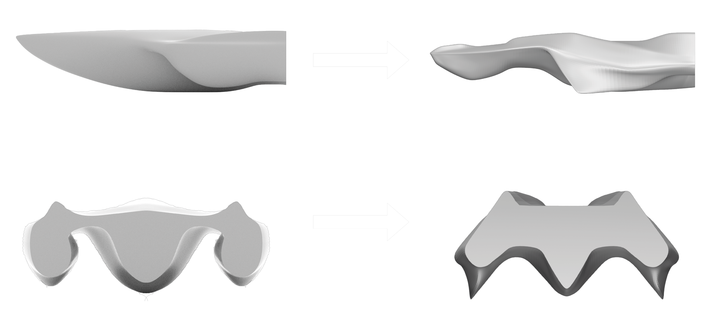
Hull Redesign
The original hull geometry was functional but limited in both sensor integration and internal space. I led the redesign focusing on three critical areas:
Forward radar integration: The front section now features a dedicated, streamlined housing for radar and LiDAR sensors — improving detection range while maintaining a cohesive form language.
Flattened deck platform: By re‑profiling the upper surface, we created a more stable platform for component mounting, reducing the risk of water ingress and simplifying the assembly process.
Improved accessibility: The new hull geometry includes larger hatches and repositioned structural elements, allowing the team to access motors, wiring, and control systems without disassembling the entire vessel.
Visual Identity & Aerodynamics
The previous iteration had a utilitarian appearance that didn't reflect the technological sophistication of the project. I introduced a sharper, more angular visual language — inspired by stealth naval vessels and high‑performance autonomous drones.
The redesigned hull features faceted surfaces that break up reflections on water, improving visual tracking during autonomous missions. The colour scheme remains minimal (matte black with orange accents — aligning with Node Engineering Club's identity), reducing glare and emphasising the vessel's technological character.
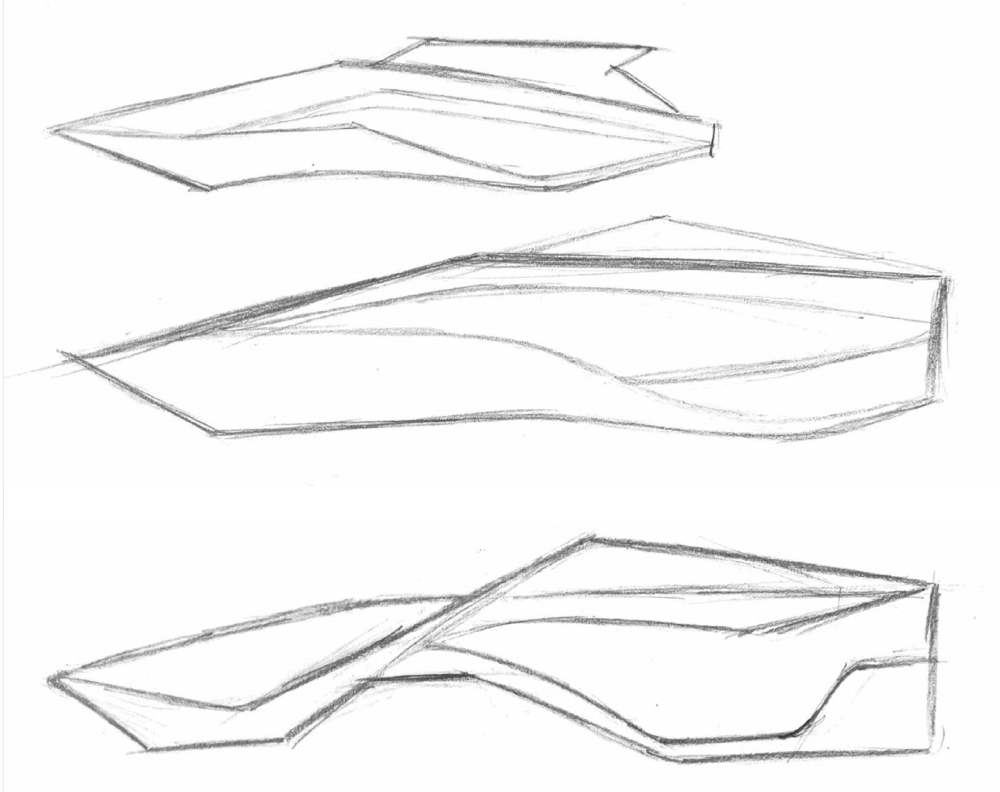
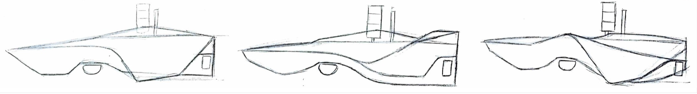
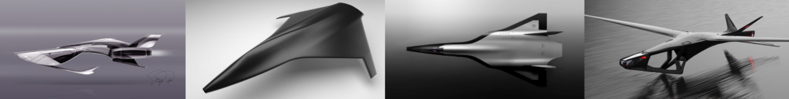
Radar Integration
Dedicated forward housing for LiDAR and radar sensors — integrated into the hull's structural design without protruding elements that would increase drag.
Platform Stability
Redesigned deck surface with reinforced mounting points for electronics, batteries, and navigation systems — minimising vibration during high‑speed manoeuvres.
Interior Accessibility
Larger access hatches and optimised internal volume — motor and component replacement now possible without full disassembly.
Aesthetic Refresh
Sharper, more aggressive silhouette — faceted surfaces and matte finish improve both visual presence and on‑water tracking.
3D Printing & Manufacturing
The hull is entirely 3D‑printed using custom segmented geometry, optimised for large‑format FDM printers. The segmentation strategy balances print bed constraints with structural integrity, while the material selection (reinforced PETG) provides durability and water resistance.
Each section is printed with precision tolerance alignment features, ensuring seamless assembly. The design also incorporates integrated channels for cable management — reducing loose wiring inside the hull.
Njord 2026 — The Challenge
Njord 2026 is a physical autonomous competition requiring vessels to navigate complex water environments, avoid obstacles, and complete mission objectives without human intervention. Asket's redesign directly addresses the competition's demands:
- Improved sensor placement for 360° obstacle detection.
- Stable platform for GPS and IMU systems — critical for precise navigation.
- Reduced drag coefficient for faster transit between waypoints.
- Modular interior allowing rapid reconfiguration between test runs.
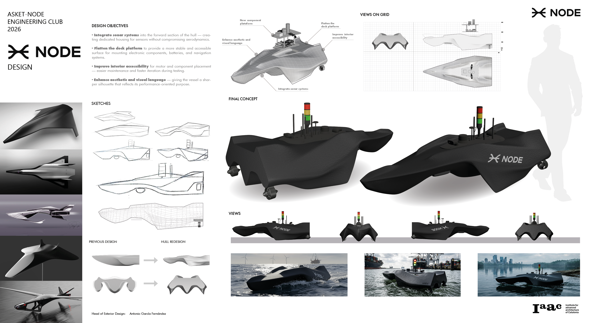
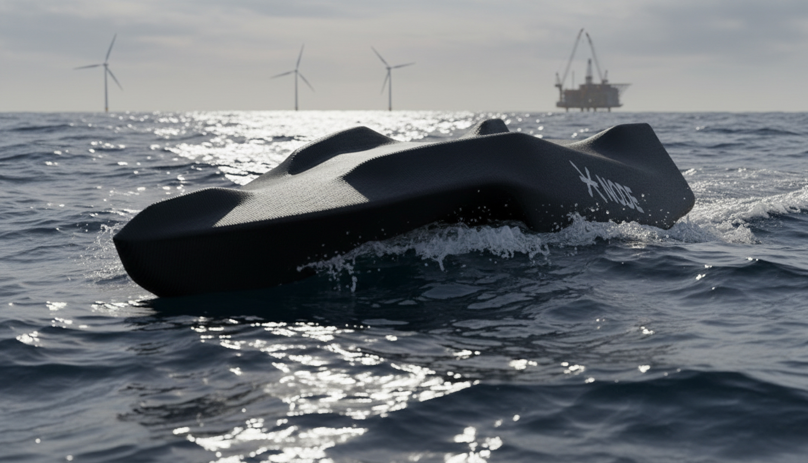
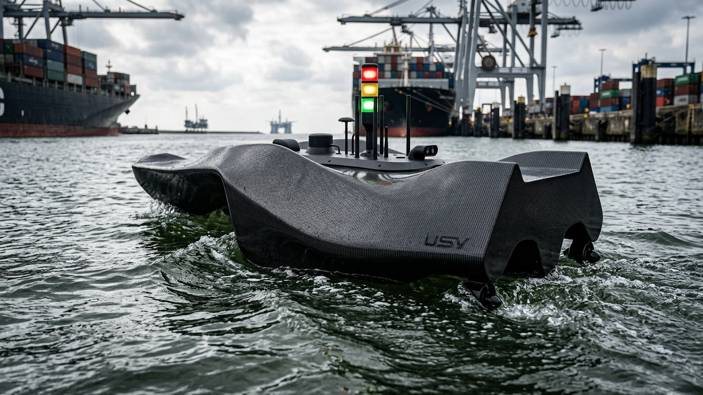
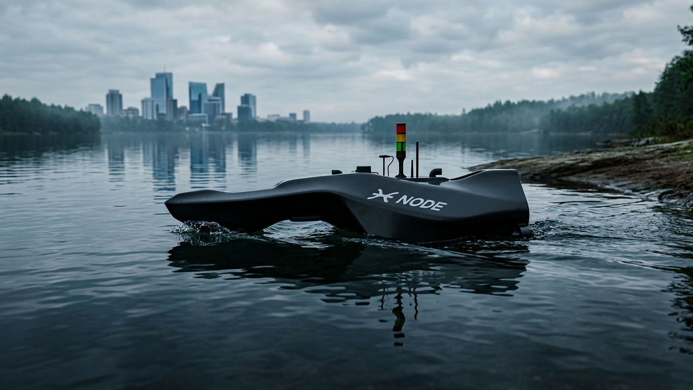